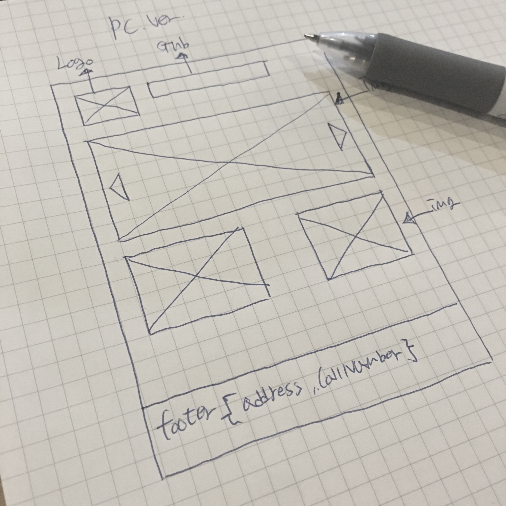
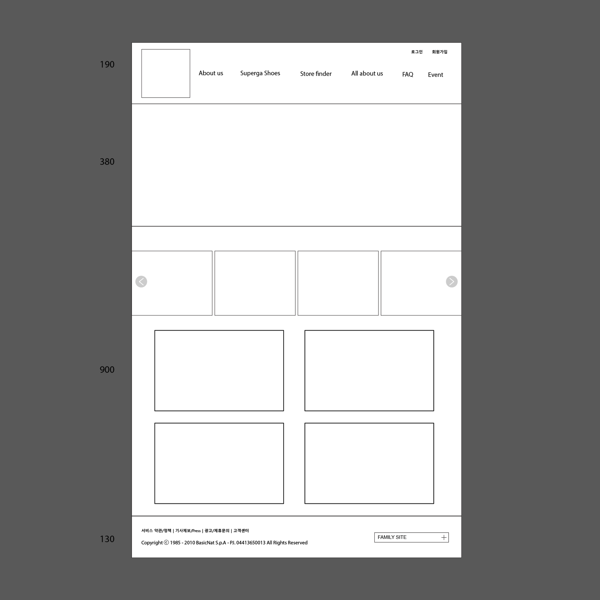

포트폴리오 메인
수페르가
수페르가(이탈리아어: Superga)는 이탈리아의 신발 브랜드이다. 1911년 이탈리아 토리노의 월터 마르티니는 수페르가 로고를 사용하여 천연고무 밑창을 사용한 신발을 제작하기 시작하였다. 그는 벌커나이즈드 고무라인을 포함하여 디자인 라인을 확장하기 시작하였고, 1925년 드디어 수페르가의 대표 상품라인 2750라인이 탄생하게 되었다. 또한 테니스 토너먼트 공식스폰서, '스포츠를 사랑하는 사람이 가장 좋아하는 신발' 캠페인 등 각종 홍보와 캠페인을 통하여 이탈리아 명품 브랜드로써의 입지를 굳혔다.
People's Shoes of Italy, SUPERGA
STEP1 기획
POSITION : 1인 프로젝트 디자인 / 퍼블리싱
제작 기간 : 2016년 02월 ~ 06월
CONCEPT : 기존 홈페이지의 리뉴얼 및 심플한 디자인
TARGET : 10 ~ 20대의 청소년/성인 층
TOOL : Adobe Photoshop, illustrator / HTML5, CSS3, jQuery
STEP2 벤치마킹
기존 수페르가의 홈페이지는 온라인 스토어가 아닌 브랜드 소개 사이트의 성향이 강했습니다. 그렇기에 온라인 스토어 및 브랜드 소개를 위하여 온라인 스토어를 가지고있는 브랜드를 탐색하였고 그에 적합하다고 생각된 '헉슬리'의 사이트 구조와 '뉴발란스'의 배너사용형태 및 구조 배치형태, 그리고 'GUESS'의 이미지 디자인 형태 등을 참고하여 작업하였습니다
클릭시 해당 사이트로 이동
STEP3 스케치 및 목업
벤치마킹을 통한 자료를 바탕으로 스케치를 디바이스(PC, Tablet, Mobile)를 고려하여 작업을 진행합니다. 작업이 완료된 스케치를 포토샵,일러스트를 사용하여 정확한 크기와 알맞은 위치에 배치하는 목업작업을 실시합니다.
-
스케치 작업
수페르가는 온라인 스토어 사이트와 같은 형태로 하기위해서 초기 스케치에서 많은 수정이 있었습니다. 배너의 위치나 어떤 용도로 사용될 것인가, 회사소개는 어떻게 할 것인가 등의 고려해야 할 점도 많았습니다.
- 
-
목업 작업
스케치 작업물을 바탕으로 목업작업을 하였습니다. 이 때 스케치에서 대략적이였던 위치나 크기를 다시한번 수정하고 재배치 하였습니다.
- 
STEP4 최종 디자인 및 코딩작업
POSITION : 1인 프로젝트 디자인 / 퍼블리싱
제작 기간 : 2016년 02월 ~ 06월
CONCEPT : 기존 홈페이지의 리뉴얼 및 심플한 디자인
TARGET : 10 ~ 20대의 청소년/성인 층
TOOL : Adobe Photoshop, illustrator / HTML5, CSS3, jQuery